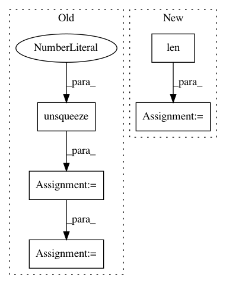

d5398270501cd5d6e9880db5e15ebf407ddec5ee,examples/plot_expectation_maximisation_manifolds.py,,weighted_gmm_pdf,#Any#Any#Any#Any#Any#,160
Before Change
def weighted_gmm_pdf(w, z, mu, sigma, distance):
// print(z.size())
// print(z.size(0), len(mu), z.size(1))
z_u = z.unsqueeze(1).expand(z.size(0), len(mu), z.size(1))
// print(z_u.size())
// print(mu.size())
mu_u = mu.unsqueeze(0).expand_as(z_u)
distance_to_mean = distance(z_u, mu_u)
sigma_u = sigma.unsqueeze(0).expand_as(distance_to_mean)
distribution_normal = torch.exp(-((distance_to_mean)**2)/(2 * sigma_u**2))
After Change
mesh_data_units = gs.expand_dims(mesh_data, 1)
mesh_data_units = gs.repeat(mesh_data_units, len(means), axis = 1)
//means_units = gs.expand_dims(means,0)
means_units = gs.expand_dims(means,0)
means_units = gs.repeat(means_units,mesh_data_units.shape[0],axis = 0)
mesh_data_units = torch.from_numpy(mesh_data_units)
means_units = torch.from_numpy(means_units)
//means_units = means_units.expand_as(mesh_data_units)
In pattern: SUPERPATTERN
Frequency: 3
Non-data size: 5
Instances
Project Name: geomstats/geomstats
Commit Name: d5398270501cd5d6e9880db5e15ebf407ddec5ee
Time: 2020-04-03
Author: hadizaatiti@gmail.com
File Name: examples/plot_expectation_maximisation_manifolds.py
Class Name:
Method Name: weighted_gmm_pdf
Project Name: mozilla/TTS
Commit Name: b1935c97fa1175908c579a4db06214174253f5f4
Time: 2020-06-26
Author: erogol@hotmail.com
File Name: server/synthesizer.py
Class Name: Synthesizer
Method Name: tts
Project Name: r9y9/wavenet_vocoder
Commit Name: 90163e28710cb299adcd277a3931872e0a2a44cc
Time: 2019-08-25
Author: zryuichi@gmail.com
File Name: wavenet_vocoder/wavenet.py
Class Name: WaveNet
Method Name: forward